Cuvée fondatrice
Jeune Pousse
Première cuvée née en 2018. Un vin de fraîcheur, expression des très vieilles vignes du domaine.
Roussillon · Biodynamie
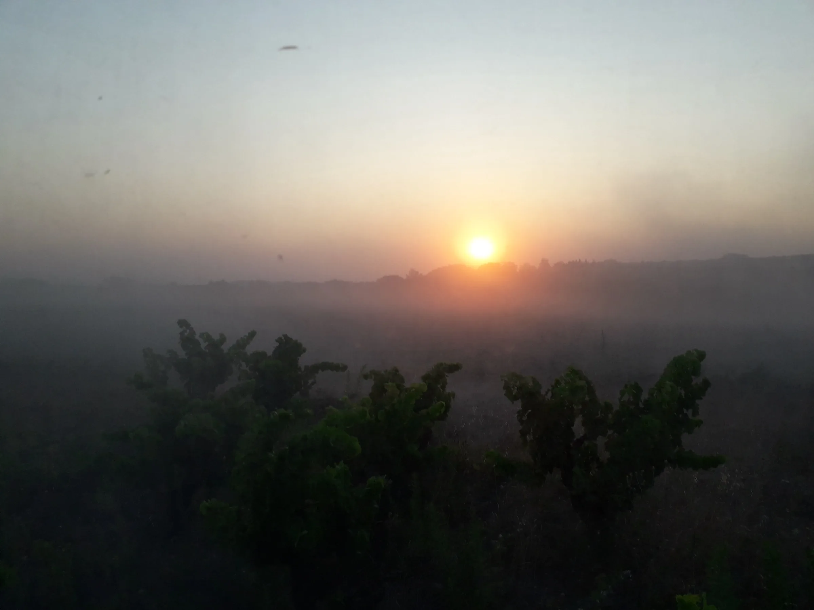
Vigneronne & Herbaliste · Roussillon
Vins Naturellement Bio
Au service de la nature pour des vins vivants depuis 2018.
Histoire & héritage
« J'ai laissé enfin s'exprimer le gène familial de vigneron. »
Issue d'une famille où l'on travaille la terre depuis plusieurs générations, j'ai appris très tôt l'importance des cycles lunaires, des plantes, des minéraux et de l'observation. Agronome et diplômée Herbaliste en 2020 après 3 ans d'école, j'ai également développé une petite distillerie d'huiles essentielles et d'hydrolats.
Préserver les vieilles vignes, replanter des friches familiales, créer des haies nourricières… Le Domaine du Lendemain est un travail d'héritage, de soin et de transmission.
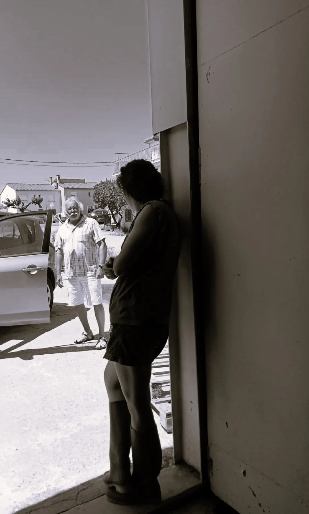
Premiers prélèvements de raisin sur le domaine de mon père pour démarrer de futures cuvées.
Création du Domaine du Lendemain. Sauvetage de 2 ha de très vieilles vignes de Grenache gris et blanc plantées en 1900.
3 ha de Carignan, Lledoner pelut et un brin de Muscat petits grains complètent l'encépagement. Les premières cuvées Jeune Pousse 18 et Petit Bourgeon 19 voient le jour — des noms inspirés de la phytothérapie, synonymes de régénérescence.
Mon père Bruno Ribière me rejoint après 30 ans de pratique sur son domaine, partageant la même envie de faire des vins libres, des vins qui nous ressemblent.
Mon frère rejoint le projet pour créer un cadre dynamique entre nature et culture, fort de ses connaissances acquises en Équateur sur l'agroécologie. Il met en place un verger diversifié méditerranéen, avec des espèces nourricières adaptées à la mouvance climatique.
8 hectares en production, des rendements faibles mais riches en personnalité.
Les Aspres
Situé en Roussillon, à 15 km au sud de Perpignan, le domaine s'étend sur le terroir des Aspres — un paysage où la chaîne pyrénéenne rencontre la Méditerranée. Collines verdoyantes, terre rouge et ocre : ce décor unique façonne des vins de caractère.
Les sols y sont variés : limono-argileux, argilo-caillouteux, schistes, quartz, calcaire… Les terrasses alluviales pyrénéennes apportent fraîcheur et pureté.
La tramontane, vent emblématique de la région, assainit et protège les vignes tout au long de l'année. Un climat sec, lumineux, venteux — les conditions idéales pour cultiver des cépages typiques du Roussillon, menés en gobelet ou cordon de Royat.
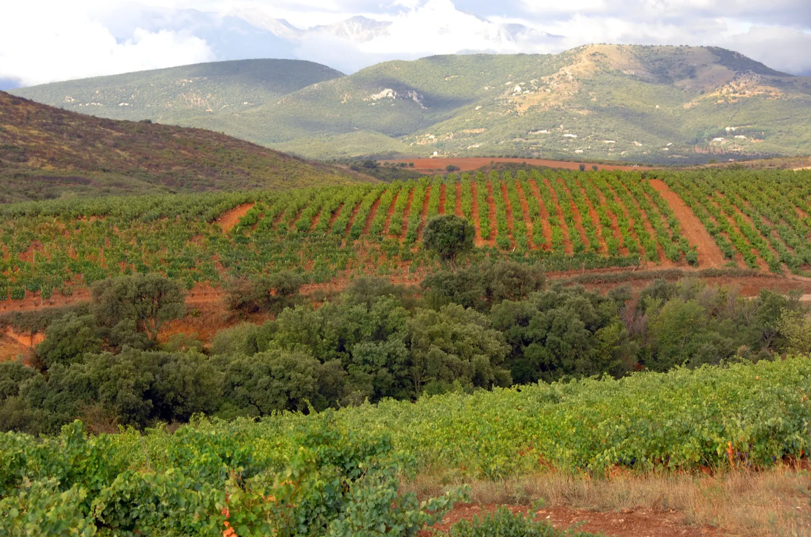
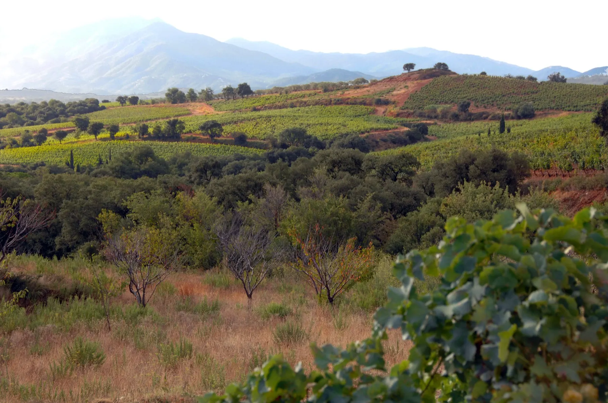
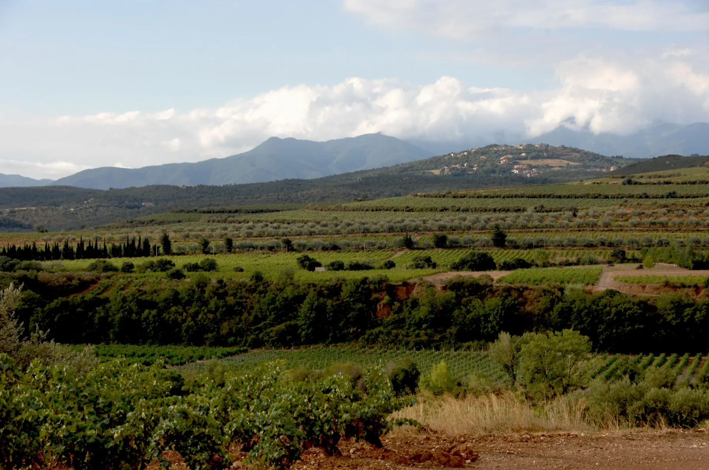
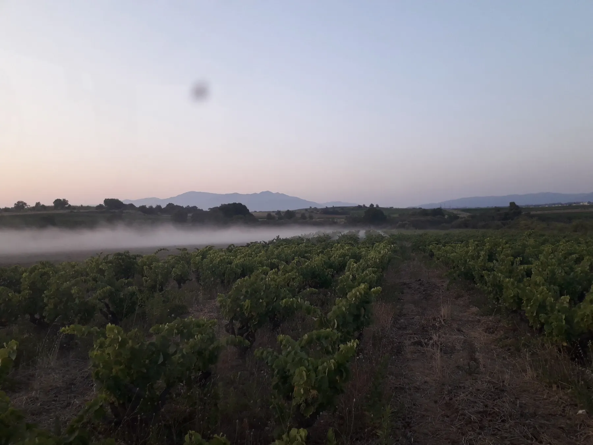
Patrimoine catalan
Le domaine cultive des cépages historiques, enracinés dans le patrimoine catalan. La plus vieille vigne a été plantée en 1878.
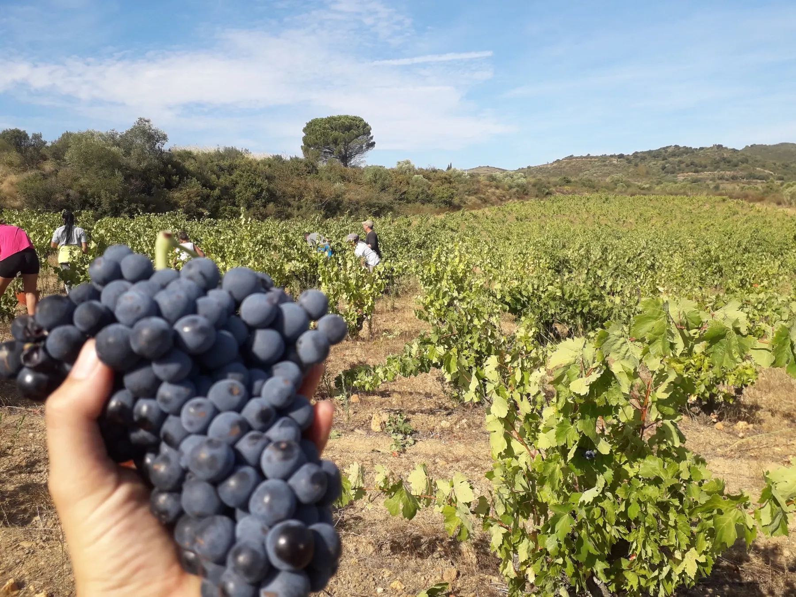
Notre devise
VIN · Véritable Invention Naturelle
Bio · Biodynamie
L'ensemble du domaine est mené en Agriculture Biologique et biodynamique. Le travail de la vigne privilégie l'observation et le respect du vivant.
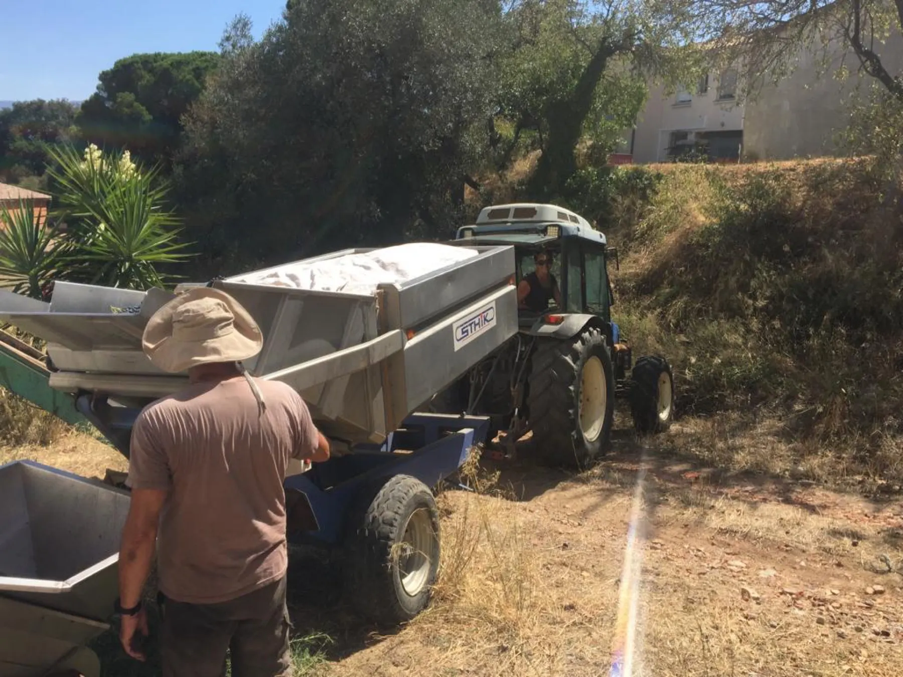
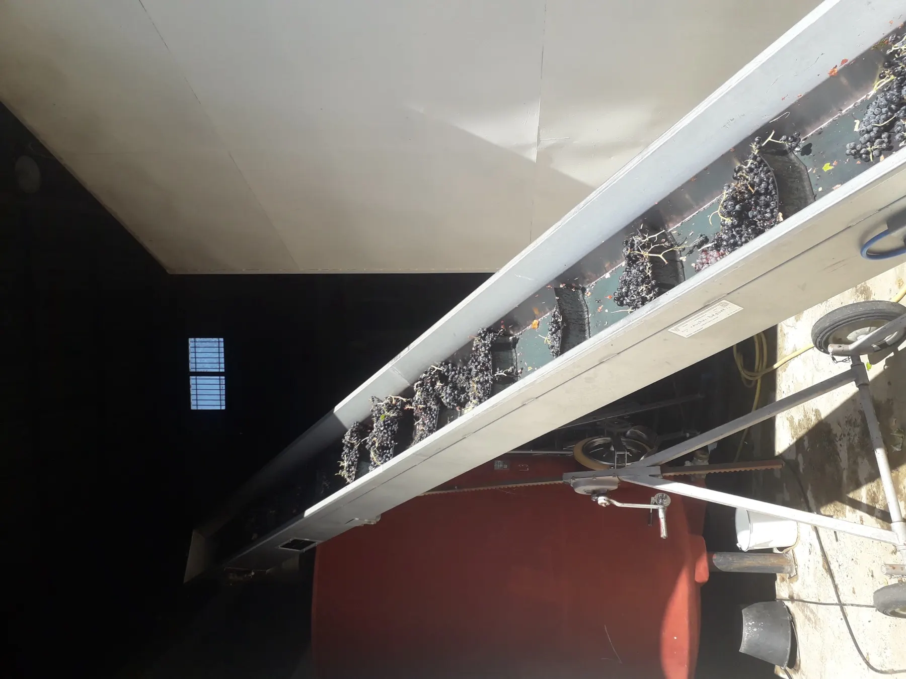
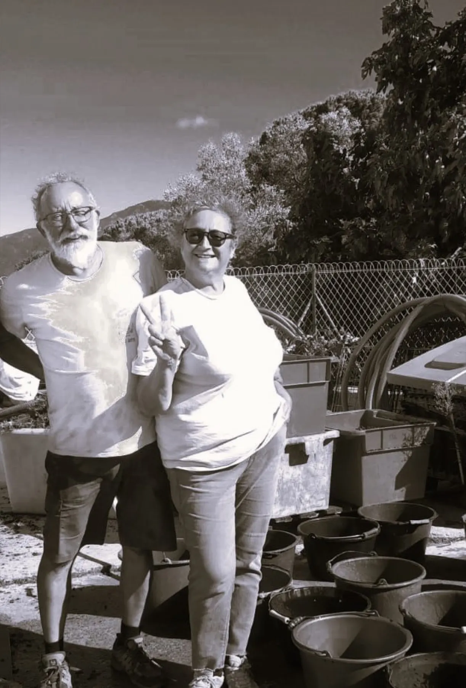
Vins vivants & produits du domaine
Des cuvées aux noms inspirés de la phytothérapie, synonymes de régénérescence. Vinifications par gravité, levures indigènes, sans ajout de produit de synthèse. Chaque millésime est unique.
Première cuvée née en 2018. Un vin de fraîcheur, expression des très vieilles vignes du domaine.
Cuvée 2019. Carignan, Lledoner pelut et Muscat petits grains. Un vin de transmission.
Issu de Grenache gris et blanc plantés en 1900. Concentration rare, profondeur du terroir des Aspres.
Verger méditerranéen
Issue du verger diversifié méditerranéen mis en place sur le domaine — espèces nourricières adaptées à la mouvance climatique, conduite en agroécologie.
Une huile de domaine, en quantités limitées, dans le même respect du vivant que nos vins.
Commander →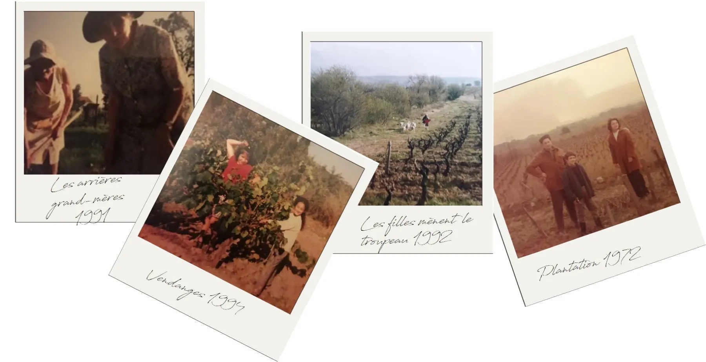
Visites & dégustations
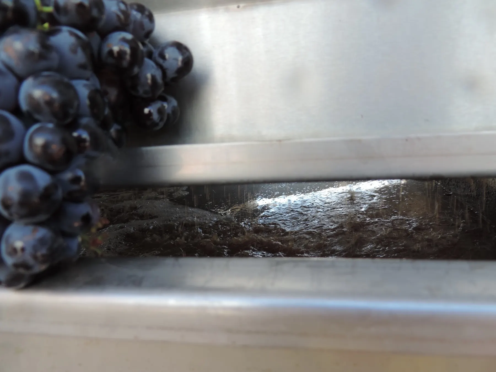
Visite dans les vignes, dégustation de vins biodynamiques au cœur des Aspres. Réservation simple et sécurisée via notre partenaire Viny'aquí.
Réserver une visiteRéseau & complicités
Réservations de visites & dégustations
Ressource amendement organique (fumier…)
Cosmétiques sensoriels issus des marcs de raisins du domaine
AMAP & événements
AMAP
Atelier de dégustation
Stationnement camping-car en pleine nature
Boutique
Retrouvez l'ensemble de nos cuvées en commande directe sur Kuupanda — livraison ou retrait au domaine.
Accéder à la boutique